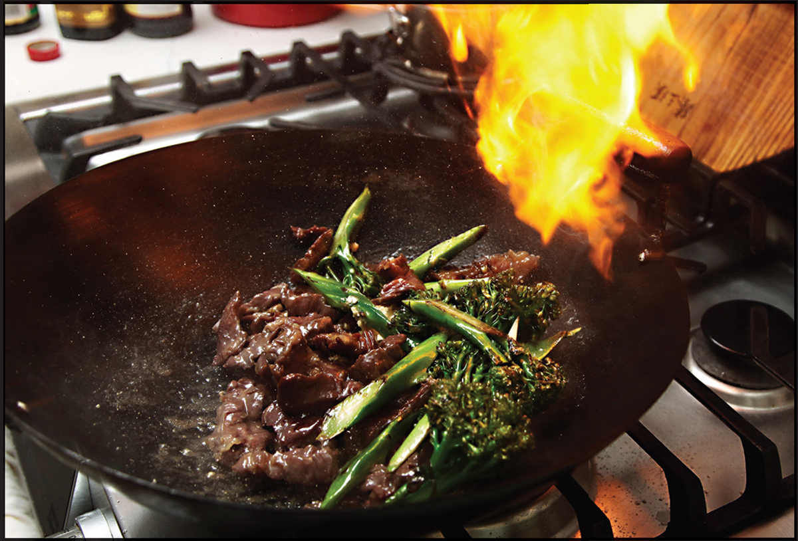

BEEF WITH BROCCOLI
|
Yield Serves 4 |
Active Time 15 minutes Total Time 30 minutes |
INGREDIENTS
For the Beef:
1 pound (450 g) beef skirt, flank, hanger, or flap, sliced for stir-fries
½ teaspoon (2 g) baking soda
½ teaspoon (1.5 g) kosher salt
1 teaspoon (5 ml) light soy sauce or shoyu
1 teaspoon (5 ml) Shaoxing wine or dry sherry
½ teaspoon (2 g) sugar
1 teaspoon (5 ml) roasted sesame oil
½ teaspoon (1.5 g) cornstarch
For the Sauce:
1 tablespoon (15 ml) light soy sauce or shoyu
1 tablespoon (15 ml) dark soy sauce
3 tablespoons (45 ml) oyster sauce
1 tablespoon (12 g) sugar
2 tablespoons (30 ml) Shaoxing wine
For the Cornstarch Slurry:
2 teaspoons (6 g) cornstarch
1 tablespoon (15 ml) water
For the Broccoli:
12 ounces broccoli or broccolini, heads cut into bite-sized florets, stems peeled and cut on a bias into 1½- to 2-inch segments
For the Stir-Fry:
¼ cup (60 ml) peanut, rice bran, or other neutral oil
2 medium garlic cloves, minced (about 2 teaspoons/5 g)
2 teaspoons minced fresh ginger (5 g/about ½-inch segment)

Although it’s a staple of food courts, beef stir-fried with broccoli in a garlicky oyster sauce has its roots in China, where it is made with gai lan, a leafy Chinese variety of broccoli.
There’s really nothing to this recipe once you have the basics of stir-frying down. I wanted the flavors of garlic, ginger, and scallions to be pretty prominent, so I incorporated them minced. If you prefer milder garlic and ginger flavor, you can start the stir-fry by frying a slice of ginger and a couple of smashed garlic cloves in the stir-fry oil before adding the meat (pick out the ginger slice and whole garlic before serving).
DIRECTIONS
1For the Beef: Place the beef in a medium bowl, cover with cold water, and vigorously agitate it. Drain through a fine-mesh strainer set in the sink and press on the beef with your hands to remove excess water. Return the beef to the bowl, add the baking soda, and vigorously massage the baking soda into the meat, lifting the meat, throwing it down, and squeezing it about for 30 seconds to a minute. Add the salt, soy sauce, Shaoxing wine, sugar, sesame oil, and cornstarch and roughly work the marinade into the meat for at least 30 seconds. Set aside to marinate for at least 15 minutes and up to overnight.
2For the Sauce: Combine the soy sauces, oyster sauce, sugar, and wine in a small bowl. Stir with a fork until the sugar is dissolved and no lumps remain. Combine the cornstarch and water in a separate small bowl and stir with a fork until the cornstarch is dissolved.
3For the Broccoli: Bring 1 quart of lightly salted water to a boil in your wok. Add the broccoli, stir well, cover, and boil, shaking the pan occasionally, until bright green but still quite firm, about 1 minute. Drain the broccoli and spread into a single layer on a sheet tray or large plate.
4BEFORE YOU STIR-FRY, GET YOUR BOWLS READY:
5For the Stir-Fry: Rub a thin film of oil into a wok and set it over high heat until smoking. Add 1 tablespoon (15 ml) of the oil and swirl to coat. Add half of the beef and stir-fry until mostly cooked through and lightly browned in spots, about 1 minute. Transfer to a large bowl. Wipe out the wok and repeat with another tablespoon (15 ml) of oil and the remaining beef. (You may need a quick rinse under the sink if any excess beef marinade threatens to burn on the wok.)
6Wipe out the wok and return it to high heat until lightly smoking. Add 1 tablespoon (15 ml) of the remaining oil and swirl to coat. Add half of the broccoli and stir-fry until tender-crisp, about 1 minute. Transfer to the bowl with the beef.
7Wipe out the wok and return it to high heat until lightly smoking. Add the remaining tablespoon (15 ml) of oil and swirl to coat. Add the remaining half of the broccoli and stir-fry until tender-crisp, about 1 minute. Return all the beef and broccoli to the wok along with the garlic and ginger. Stir-fry until fragrant, about 30 seconds.
8Stir the sauce and add to the wok, pouring it in around the edges. Stir the cornstarch slurry and add a splash. Cook, tossing, until the sauce thickens and the chicken is cooked through, about 30 seconds longer. Adjust the sauce consistency with more cornstarch slurry if it is too thin or a splash of water if it is too thick. Transfer to a serving platter and serve immediately with steamed white rice.